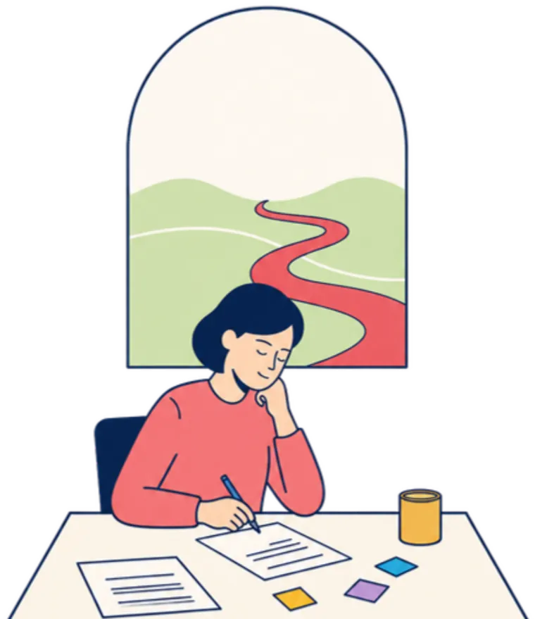

FOR YOU 個人學習・線上課程
把設計思考
用在自己身上
不知道下一步往哪走、對工作提不起勁、想換跑道又怕選錯？這一頁照「先免費試，再深入」排好：先做 20 題認識自己，聽幾集 Podcast、讀幾篇文章，準備好了再上線上課程。
- 免費 20 題
- 每週讀・聽
- 挑文章看
- 上線上課程

不知道下一步往哪走、對工作提不起勁、想換跑道又怕選錯？這一頁照「先免費試，再深入」排好：先做 20 題認識自己，聽幾集 Podcast、讀幾篇文章，準備好了再上線上課程。
